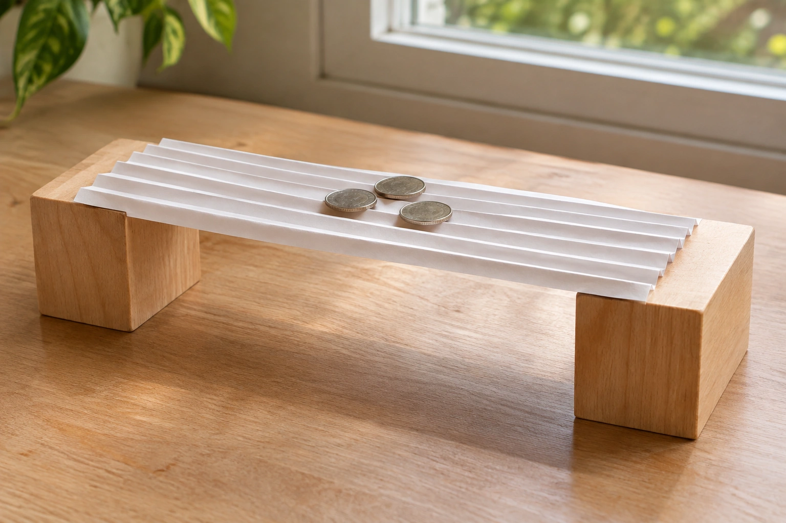
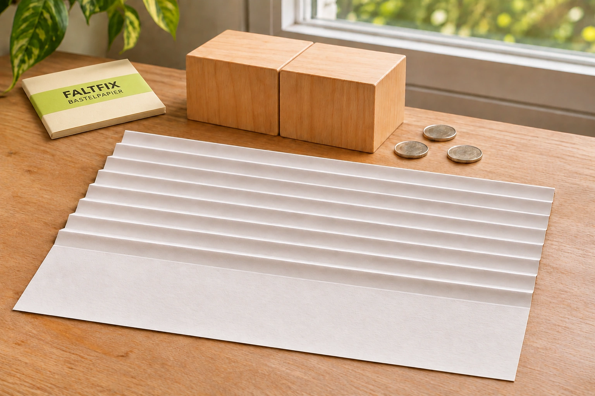

MINI-BAUPROJEKT
Eine Brücke.
Nur aus Papier.

Ich zeige dir, wie’s geht.
Erfundener Unterrichtsfall · KI-Bild · IuM-Lernwerk
IuM · Klasse 5 · Material B
Erfundener Beitrag und erfundene Marke. Die Bilder sind KI-generierte Illustrationen.
Blättere durch die vier Bilder. Du kannst auch mit den Pfeiltasten wechseln.
MINI-BAUPROJEKT

Ich zeige dir, wie’s geht.
Erfundener Unterrichtsfall · KI-Bild · IuM-Lernwerk
SO FALTE ICH

Falte dein Blatt wie eine Ziehharmonika.
Ich nehme Faltfix. Nur mit diesem Papier klappt es!
Erfundener Unterrichtsfall · KI-Bild · IuM-Lernwerk
JETZT KOMMT DER TEST
Lege das gefaltete Blatt auf zwei feste Auflagen. Lege Münzen vorsichtig auf.
Erfundener Unterrichtsfall · KI-Bild · IuM-Lernwerk
BAU MIT JULES
Mit meinem Code sparst du.
JULE10
Zum BastelpapierErfundener Unterrichtsfall · KI-Bild · IuM-Lernwerk